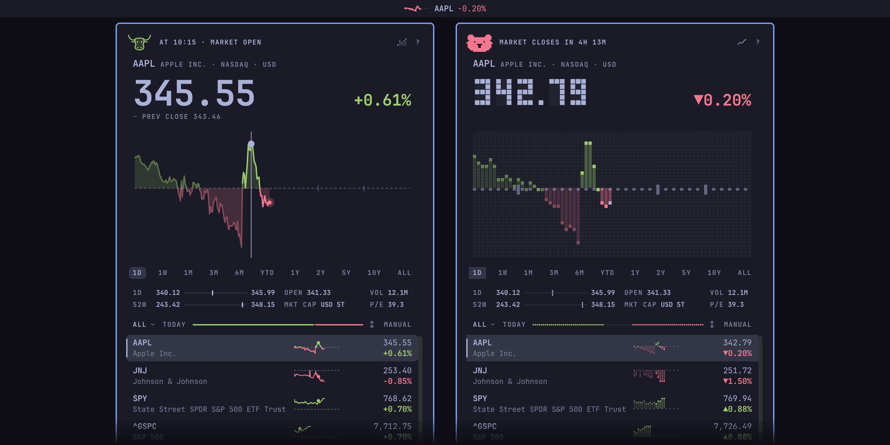

A stock watchlist for the Omarchy 4 shell
Stonks
Today's move in your bar, and a chart you can scrub a click away.
Stocks, ETFs, indexes, and crypto, drawn in your theme's colours. Free, with no account and no API key.
omarchy plugin add https://github.com/gmchande/omarchy-stonks.git --enableNeeds Omarchy 4. Omarchy asks you to confirm, then which part of the bar gets the pill.
KEYS · THIS DEMO
- ← →
- Scrub one chart step
- [ ]
- Change the chart range
- ↑ ↓
- Move the selection
- ⏎
- Show the selected row's chart
- 1–4
- Show that row's chart
- p
- Replay the chart
- c
- Percent, amount, or since the open
- s
- Switch between smooth and retro
- Esc
- Close this sheet, then the scrub
STAGE1IN YOUR BAR
One glance at the bar.
The pill shows today's move for the stock you last looked at. Scroll over it to step through your list. Left-click for the popup, right-click for the window, middle-click to change its form, and drag it along the bar.
Here, scroll over the pill to step through the demo's made-up stocks, and click it to change its form. In your bar, that's a middle-click. The mark is a little chart that climbs on an up day and falls on a down one.
STAGE2ON THE LABEL
What's in the cartridge.
- Click the pill for the day's chart and scrub it with the pointer, or pick a range from a week to all time.
- Pre-market, after-hours, and overnight prices, and when the market opens or closes.
- Stocks, ETFs, indexes, and crypto, from New York to London and Tokyo, each in its own currency.
- Lists of your own, such as a portfolio or a sector.
- A tiled window too: the popup's chart and rows at the window's width.
- An old price says "As of" and its time. A refresh that fails puts a "!" on the pill.
- No account and no API key.
NOT IN THE CARTRIDGE
Stonks doesn't track holdings, send price alerts, or convert currencies.
STAGE3SMOOTH OR RETRO
Two looks. One click.
Retro draws the price in block digits and the charts in pixel columns, the way Omarchy draws its logo. Smooth draws them in lines. Click the small chart icon at the top right of the popup to switch, or press s.

STAGE4SELECT YOUR THEME
It wears your theme.
Both looks draw in your theme's colours, light themes too: up in its green and down in its red. Where a theme's pair is missing, too alike, or too faint, Stonks uses its own green and red.
STAGE5MOVE LIST
Play it with the keys.
Press ? in the popup for a sheet of the everyday keys. A few of them:
- ↑↓
- Move the selection
- ←→
- Scrub one chart step
- []
- Change the chart range
- p
- Replay the chart
- a
- Search and add a symbol
- x
- Remove the selected row
- u
- Undo the last removal
- w
- Open the list menu
- ,.
- Previous or next list
- c
- Change as a percent, an amount, or since the open
- s
- Switch between smooth and retro
- r
- Refresh
Every key is in the README's table.
STAGE6HOUSE RULES
No tricks.
- PRICES
- Quotes, charts, and search come from Yahoo's unofficial endpoints, and overnight prices from Robinhood. Either may change or stop without notice.
- DELAYS
- Yahoo delays many exchanges' quotes, London's and Tokyo's among them, by up to 30 minutes. Any price more than two minutes old while its market trades says "As of" and its time.
- RUNS
curlfor every request, toquery1.finance.yahoo.com,query2.finance.yahoo.com, andapi.robinhood.com. Nothing else.omarchy restart shellonly when you click the update notice.- FILES
- Your lists and settings in
~/.config/omarchy/grvc.stonks.json, the last quotes in~/.cache/grvc.stonks/quotes.json. - UPDATES
- Never by itself.
- ADVICE
- None. Stonks isn't investment advice, and isn't affiliated with Yahoo or Robinhood.
Free play
No account. No API key. No coin. MIT licence.
omarchy plugin add https://github.com/gmchande/omarchy-stonks.git --enable- Omarchy warns that plugins run unsandboxed and asks you to confirm the clone.
- It asks which bar section gets the pill. The centre is the default.
- Click the pill.
To read the code first, leave out --enable, say no when asked to enable it, and run omarchy plugin enable grvc.stonks when you're ready.